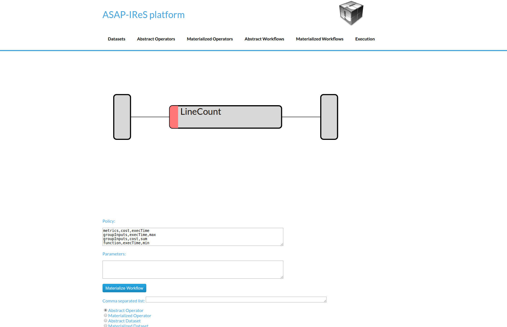
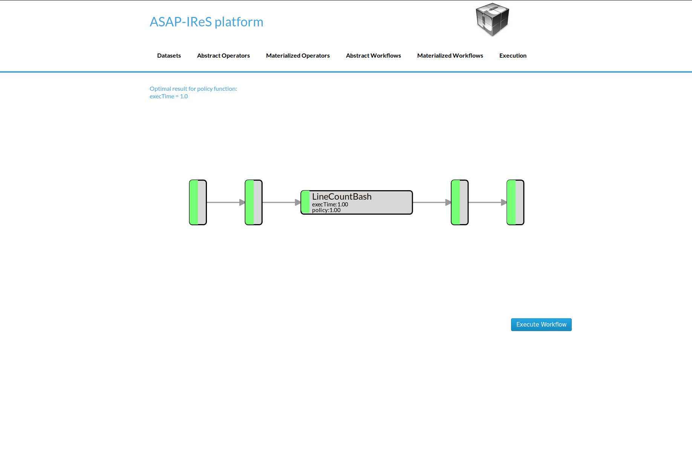
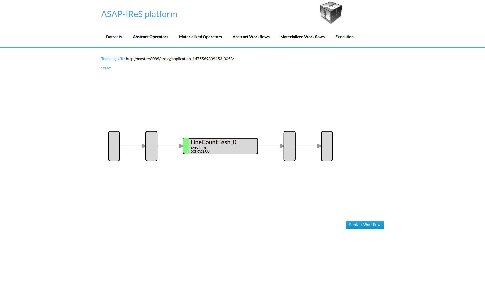
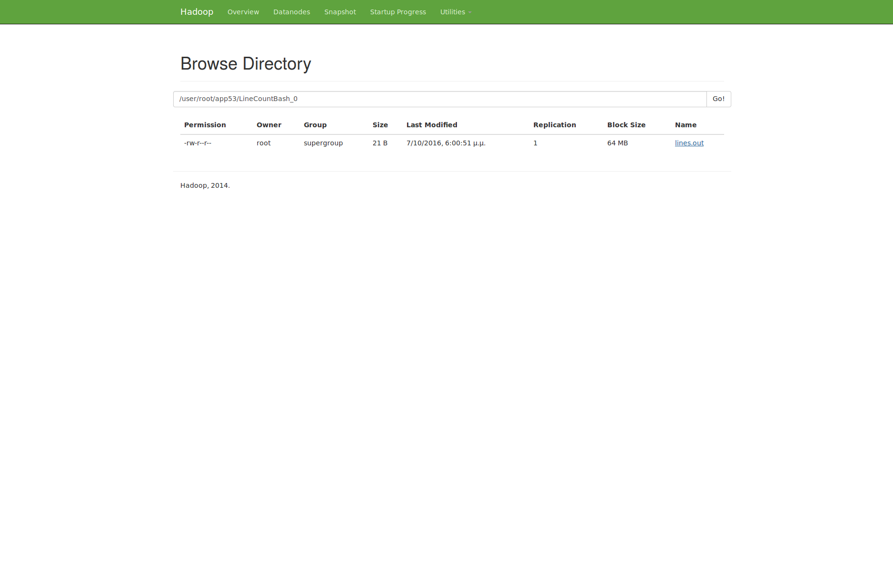
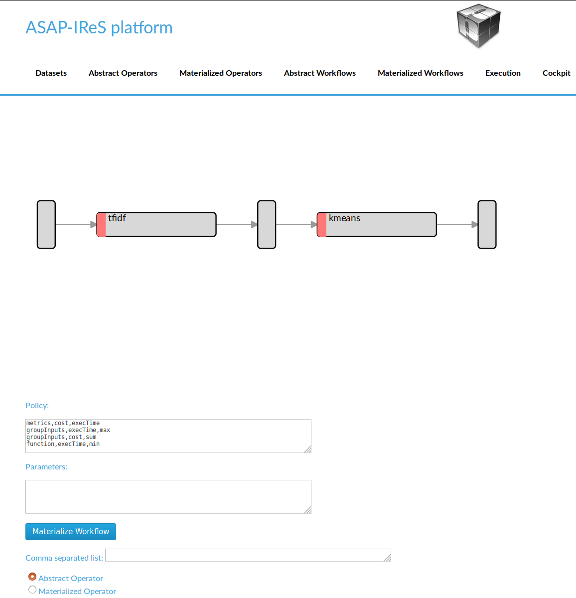

Installation & Deployment¶
Installing IReS-Platform¶
This section serves as an installation and execution manual for IReS
Overview¶
To have the IRes platform up and running, 4 steps are required:
- Clone IReS code to the server
- Run install.sh
- Validate installation
- Start the IReS server
Clone IReS code to the server¶
For a quick reference of how to use git, click here. Open a terminal (Linux) and navigate to a desired directory where IReS-Platform files will be cloned e.g. asap. Then, clone the project by entering the following command
git clone git@github.com:project-asap/IReS-Platform.git
Run install.sh¶
After successful cloning of the IReS platform, various folders and files can be found inside $IRES HOME. Among them there exists install.sh. Assuming that the current working directory is $IRES HOME, executing
./install.sh
will start building IReS. Upon successful build you will be prompted to provide the path where Hadoop YARN is located in your computer. By doing this, IReS gets con- nected to Hadoop YARN. Alternatively, executing
./install.sh -c $YARN_HOME,$IRES_HOME
will make the connection of IReS and YARN, where $YARN_HOME and $IRES_HOME correspond to the absolute paths of YARN’s and IReS’s home folder.
Assuming that the connections have been established, update the file
$YARN_HOME/etc/hadoop/yarn-site.xml
with the following property values,
yarn.nodemanager.services-running.per-node
yarn.nodemanager.services-running.check-availability
yarn.nodemanager.services-running.check-status
These properties enable IReS to run workflows over YARN and monitor cluster resources and services.
Validate installation¶
If anything goes wrong during the build process of IReS, error messages will be printedout and a log file will be provided.
Start the IReS server¶
Run IReS server by running the command
./install.sh -r start
No exception should be raised. Also, the jps command should print a “Main” process running that corresponds to ASAP server. Run ASAP server web user interface at http://your_hostname:1323/web/main. IReS home page should be displayed. Run a workflow, for example run “hello_world” from “Abstrack Workflows” tab and see what happens not only in IReS web interface but also in YARN and HDFS web interfaces. Make sure that YARN has been started before running any workflow. Click on “Cockpit” tab to verify that the services are running.
Monitor¶
The Monitor is responsible for the profiling of the operators in every workflow execution. It keeps the execution metrics (eg execution time, number of cores etc) in a dictionary format and stores them into a MongoDB server. To install the Monitor:
- Install MongoDB. You can follow this tutorial.
- Copy the ‘asap-tools’ subproject to every IReS node and also install the required dependencies.
- Set the full path of the asap (asap-tools/bin/asap) script in the asap.path parameters of the `asap.properties(asap-server/target/conf/asap.properties) file.
- In each node create a file /etc/reporter_config.json with the following content:
{
"backend": "mongo",
"host":"the_mongo_db_host"
}
Running a sample workflow¶
The HelloWorld is a simple workflow constists of just a single operator, designed for demonstration purposes. To run the HelloWolrd follow the next steps:
- Go to IReS UI: http://ires_host:1323/web/main

IReS Home Page
- Go to the Abstract Workflows tab and select the HelloWorld workflow

Abstract Workflows Tab
- Then click on Materialize Workflow button

Abstract HelloWorld Workflow
- Click on the Execute Workflow button to start the execution

The materialized HelloWorld workflow
In the figures below we can see the execution process

The execution has been started

The submitted YARN application

The execution has been finished
Create a workflow from scratch¶
In this section the process of designing a new workflow from scratch is described. We will create a workflow that consists of a single operator and takes as input a text file and produces as output the number of lines.
Dataset definition¶
In order to create the workflow input dataset you need to add the dataset definition into IReS library. Create a file named ‘asapServerLog’ into the asapLibrary/datasets/ folder and add the following content:
Optimization.documents=1
Execution.path=hdfs\:///user/root/asap-server.log
Constraints.Engine.FS=HDFS
This step assumes that a file named ‘asap-server.log’ exists in the HDFS. You can download the log file used in this example through this link.
- From the bash shell, go to the asapLibrary/operators folder in the IReS installation directory.
cd $ASAP HOME/target/asapLibrary/operators
- Then, create a new folder named with the new materialized operators name.
mkdir LineCount
- Create the description file and enter the information below. A description file should meet the standards of the template provided in this this link.. This template contains all the required parameters for an operator to run as long as all the optional parameters which can be used.
Constraints.Engine=Spark
Constraints.Output.number=1
Constraints.Input.number=1
Constraints.OpSpecification.Algorithm.name=LineCount
Optimization.model.execTime=gr.ntua.ece.cslab.panic.core.models.UserFunction
Optimization.model.cost=gr.ntua.ece.cslab.panic.core.models.UserFunction
Optimization.outputSpace.execTime=Double
Optimization.outputSpace.cost=Double
Optimization.cost=1.0
Optimization.execTime=1.0
Execution.Arguments.number=2
Execution.Argument0=In0.path.local
Execution.Argument1=lines.out
Execution.Output0.path=$HDFS_OP_DIR/lines.out
Execution.copyFromLocal=lines.out
Execution.copyToLocal=In0.path
- Create the .lua file with the execution instructions
operator = yarn {
name = "LineCount",
timeout = 10000,
memory = 1024,
cores = 1,
container = {
instances = 1,
--env = base_env,
resources = {
["count_lines.sh"] = {
file = "asapLibrary/operators/LineCount/count_lines.sh",
type = "file",
-- other value: ’archive’
visibility = "application" -- other values: ’private’, ’public’
}
},
command = {
base = "./.sh"
}
}
}
Create the executable named count lines.sh with the following content
Restart the IReS server
..code:: javascript
$ IRES_HOME/asap-server/src/main/scripts/asap-server restart
Materialized Operator Definition (via REST)¶
In this example we describe an alternative way to create a materialized operator with the REST API. To do so, create a folder locally and add the required description file as well as all other files needed for the execution. In this case, an extra parameter should be added to the description file which defines the execution command (Execution.command).
- description file: Create inside the folder a file named description with the following content:
Constraints.Engine=Spark
Constraints.Output.number=1
Constraints.Input.number=1
Constraints.OpSpecification.Algorithm.name=LineCount
Optimization.model.execTime=gr.ntua.ece.cslab.panic.core.models.UserFunction
Optimization.model.cost=gr.ntua.ece.cslab.panic.core.models.UserFunction
Optimization.outputSpace.execTime=Double
Optimization.outputSpace.cost=Double
Optimization.cost=1.0
Optimization.execTime=1.0
Execution.Arguments.number=2
Execution.Argument0=In0.path.local
Execution.Argument1=lines.out
Execution.Output0.path=$HDFS_OP_DIR/lines.out
Execution.copyFromLocal=lines.out
Execution.copyToLocal=In0.path
Execution.command=./count_lines.sh
- executable file: Create the executable named ‘count_lines.sh’ with the following content:
#!/bin/bash
wc -l $1 >> $2
and make it executable
chmod +x count_lines.sh
- Send the operator via the ‘send_operator.sh’ script:
./send_operator.sh LOCAL_OP_FOLDER IRES_HOST LineCount
The script is available at $IRES_HOME/asap-server/src/main/scripts. You can also download it directly.
Abstract operator definition¶
Create the LineCount abstract operator by creating a file named ‘LineCount’ in the asapLibrary/abstractOperators folder with the following content:
Constraints.Output.number=1
Constraints.Input.number=1
Constraints.OpSpecification.Algorithm.name=LineCount
Abstract workflow definition (Server-Side)¶
Create the LineCountWorkflow workflow by creating a folder named ‘LineCountWorkflow’ in the asapLibrary/abstractWorkflows. The abstract workflow folder should consist of three required components: the datasets folder , the operators folder and a file named graph.
- Create a folder named ‘datasets’ and copy the asapServerLog file from the asapLibrary/datasets/ folder into it. Then, create an empty file named ‘d1’ (touch d1).
- Create a file named ‘graph’ and add the following content:
asapServerLog,LineCount,0
LineCount,d1,0
d1,$$target
This graph file defines the workflow graph as follows: asapServerLog dataset is being given as input to the LineCount abstract operator and LineCount operator outputs the result into d1. Finally, d1 node maps to the final result ($$target).
- operators: Create a folder named ‘operators’ which will contain the operators involved in the worflow. In the ‘operators’ folder create a file named ‘LineCount’ and add the following content:
Constraints.Engine=Spark
Constraints.Output.number=1
Constraints.Input.number=1
Constraints.OpSpecification.Algorithm.name=LineCount
- Restart the server for changes to take effect.
$IRES_HOME/asap-platform/asap-server/src/main/scripts/asap-server restart
Abstract Workflow Definition (GUI):¶
Alternatively, the abstract workflow can be defined through the Web UI as follows. i. Go to the Abstract Workflows tab. Enter the name ”LineCountWorkflow” in the Name textbox and click the New Workflow button. ii. Then we add the workflow parts one-by-one. First we add the asapServer-Log dataset from the dataset library. Select the Materialized Dataset radio button and enter the dataset name in the Comma seperated list text box. Then click the Add nodes button to add the dataset node to the workflow graph. Repeat this step to add an output node with name d1. Just enter the name d1 to the text box and click the Add nodes button. iii. Add the LineCount abstract operator to the workflow. Select the Abstract Operator radio button, enter the operators name (LineCount) in the text box and click again the Add nodes button. iv. Describe the workflow by connecting the graph nodes defined in the previous steps, by entering the following text in the large text box:
asapServerLog,LineCount
LineCount,d1
d1,$$target
Click the Change graph button
Workflow Materialization¶
To materialize the workflow navigate to the Abstract Workflows tab and click on the LineCountWorkflow created in the previous steps.
{kind=link}
Click on the Materialize Workflow button
{kind=link}
Now you can see the materialized LineCount workflow. Click on Execute Workflow button to trigger the execution
{kind=link}
When the execution finish, navigate to the HDFS file browser to see the output located at appN folder.
{kind=link}
All resources and examples files described in this section are available here.
Creating a text clustering workflow¶
This example describes how to define a text clustering workflow consisting of two operators. This workflow takes as input a dataset with raw text files. In the first operator the files are transformed into tf-idf vectors. Then the vectors are given as input to the next operator which performs the clustering using a k-means algorithm. We will use two Cilk-based implementations for this example, and we will create all the required files and directories using the server-side method.
Dataset definition¶
We will use this text file for our example. The following file should exists in the HDFS cluster with name ‘textData’. Create the data definition as follows: 1. Create a file named ‘textData’ in the asapLibrary/datasets folder 2. Add the following content:
Constraints.Engine.FS = HDFS
Constraints.type = text
Execution.path = hdfs:///user/asap/input/textData
Optimization.size = 932E06
TF-IDF abstract operator definition¶
Next, we’ll define the abstract definition for a TF-IDF operator. 1. Create a file named ‘tf-idf’ in the asapLibrary/abstractOperators folder 2. Add the following content:
Constraints.Input.number = 1
Constraints.OpSpecification.Algorithm.name = TF_IDF
Constraints.Output.number = 1
K-Means abstract operator definition¶
Create the abstract definition of K-Means operator as follows: 1. Create a file named ‘kmeans’ in the asapLibrary/abstractOperators folder 2. Add the following content:
Constraints.Input.number = 1
Constraints.OpSpecification.Algorithm.name = kmeans
Constraints.Output.number = 1
Abstract workflow definition¶
In this step we’ll describe how to connect the two aforementioned operators in order to define the text clustering workflow. 1. Create a folder named ‘TextClustering’ in the asabLibrary/abstractWorkflows folder 2. Specify the workflow graph by creating a file named ‘graph’ with the following content:
testdir,tfidf_cilk,0
tfidf_cilk,d1,0
d1,kmeans,0
kmeans,d2,0
d2,$$target
Next, we will defined the materialized operators. We will use Cilk for our implementations.
TF-IDF materialized operator definition (Cilk)¶
- Create a folder named ‘TF_IDF_cilk’ in the asapLibrary/operators folder.
- Create the description file named ‘description’ and add the following content:
Constraints.Output0.Engine.FS=HDFS
Constraints.OpSpecification.Algorithm.name=TF_IDF
Constraints.Input0.type=text
Constraints.Output0.type=arff
Constraints.Engine=Cilk
Constraints.Output.number=1
Constraints.Input.number=1
Execution.LuaScript=TF_IDF_cilk.lua
Execution.Arguments.number=2
Execution.Argument0=In0.path.local
Execution.Argument1=tfidf.out
Execution.copyFromLocal=tfidf.out
Execution.copyToLocal=In0.path
Execution.Output0.path=$HDFS_OP_DIR/tfidf.out
- Create the lua file named ‘TF_IDF_cilk.lua’ as follows:
operator = yarn {
name = "Execute cilk tfidf",
timeout = 10000,
memory = 1024,
cores = 1,
container = {
instances = 1,
--env = base_env,
resources = {
["tfidf"] = {
file = "asapLibrary/operators/TF_IDF_cilk/tfidf",
type = "file", -- other value: 'archive'
visibility = "application" -- other values: 'private', 'public'
}
},
command = {
base = "export LD_LIBRARY_PATH=/0/asap/qub/gcc-5/lib64:$LD_LIBRARY_PATH ; ./tfidf"
}
}
}
- Add the ‘tfidf’ executable (can be found in the tarball provided in the end of this article).
K-Means materialized operator definition (Cilk)¶
- Create a folder named ‘kmeans_cilk’ in the asapLibrary/operators folder.
- Create the description file named ‘description’ and add the following content:
Constraints.Output0.Engine.FS=HDFS
Constraints.OpSpecification.Algorithm.name=kmeans
Constraints.Input0.Engine.FS=HDFS
Constraints.Input0.type=arff
Constraints.Engine=Spark
Constraints.Output.number=1
Constraints.Input.number=1
Execution.LuaScript=kmeans_cilk.lua
Execution.Arguments.number=2
Execution.Argument0=In0.path.local
Execution.Argument1=kmeans.out
Execution.copyFromLocal=kmeans.out
Execution.copyToLocal=In0.path
Execution.Output0.path=$HDFS_OP_DIR/kmeans.out
- Create the lua file named ‘kmeans_cilk.lua’ as follows:
operator = yarn {
name = "Execute kmeans",
timeout = 10000,
memory = 1024,
cores = 1,
container = {
instances = 1,
--env = base_env,
resources = {
["kmeans"] = {
file = "asapLibrary/operators/kmeans_cilk/kmeans",
type = "file", -- other value: 'archive'
visibility = "application" -- other values: 'private', 'public'
}
},
command = {
base = "export LD_LIBRARY_PATH=/0/asap/qub/gcc-5/lib64:$LD_LIBRARY_PATH ; ./kmeans"
}
}
}
- Add the ‘kmeans’ executable (can be also found in the tarball).
Execute the workflow¶
After finishing the previous steps restart the server for changes to take effect. Then: 1. Go to Abstract Workflows and click on TextClustering
{kind=link}
- Materialize the workflow by clicking ‘Materialize’ button
{kind=link}
- Start the workflow execution by clicking ‘Execute’ button
{kind=link}
The files used in this example can be downloaded here.